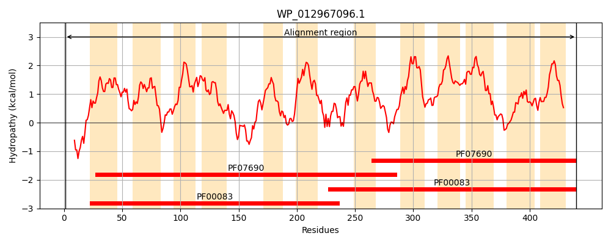
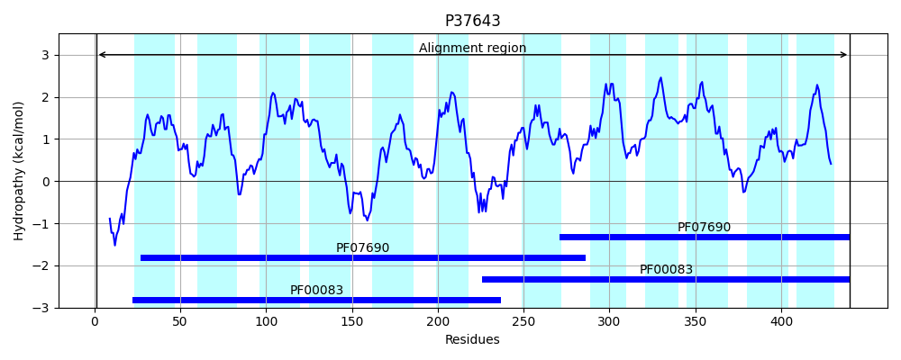
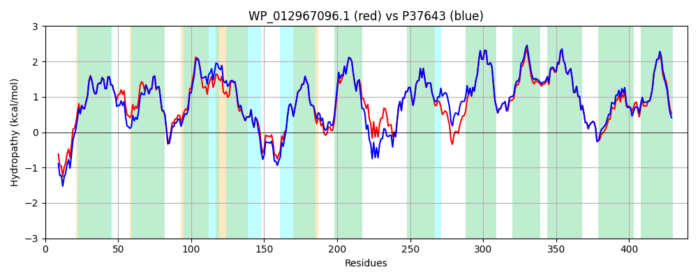

Hit Accession: P37643
Hit TCID: 2.A.1.6.10
Hit Description: gnl|BL_ORD_ID|10118 gnl|TC-DB|P37643|2.A.1.6.10 Inner membrane metabolite transport protein yhjE OS=Escherichia coli (strain K12) GN=yhjE PE=1 SV=1
Mach Len: 440
e:0.000000
Query TMS Count : 12
Hit TMS Count: 12
TMS-Overlap Score: 12.800000
Predicted Substrates:CHEBI:25212;metabolite
BLAST Alignment:
Score: 2068 , Bit scores: 801 bits, E-value: 0.0e+00, Alignment length: 440, Percentage identity: 92
Query: 1 MQATATTLENSQETAPVNSRNKVVVASLIGTAIEFFDFYIYATAAVIVFPHIFFPQGDAAAATLQSLATFAIAFVARPIGSALFGHFGDRVGRKVTLVASLLTMGISTVVIGLLPGYESIGIVAPMLLALARFGQGLGLGGEWGGAALLATENAPARKRALYGSFPQLGAPIGFFFANGTFLLLSWLLTDQQFMEWGWRVPFIFSAVLVIIGLYVRVSLHETPVFAKVAAAKKQVKIPLGTLLTKHVRVTVLGTFIMLATYTLFYIMTVYSMTFSTGAAPNGLGLPRNEVLWMLMMAVIGFGVMVPVAGLLADAFGRRKSMIVITTMIILFALFAFKPLLGSGNPLLVFAFLLLGLSLMGLTFGPMGALLPELFPTEVRYTGASFSYNVSSILGASVAPYIAAWLQGNYGLAAVGTYLAAMAALTLIALLLTHETRHQSL 440
MQATATTL++ QE P+NSRNKV+VASLIGTAIEFFDFYIYATAAVIVFPHIFFPQGD AATLQSLATFAIAFVARPIGSA+FGHFGDRVGRK TLVASLLTMGISTVVIGLLPGY +IGI AP+LLALARFGQGLGLGGEWGGAALLATENAP RKRALYGSFPQLGAPIGFFFANGTFLLLSWLLTD+QFM WGWRVPFIFSAVLVIIGLYVRVSLHE+PVF KVA AKKQVKIPLGTLLTKHVRVTVLGTFIMLATYTLFYIMTVYSMTFST AAP GLGLPRNEVLWMLMMAVIGFGVMVPVAGLLADAFGRRKSM++ITT+IILFALFAF PLLGSGNP+LVFAFLLLGLSLMGLTFGPMGALLPELFPTEVRYTGASFSYNV+SILGASVAPYIAAWLQ NYGL AVG YLAAMA LTLIALLLTHETRHQSL
Sbjct: 1 MQATATTLDHEQEYTPINSRNKVLVASLIGTAIEFFDFYIYATAAVIVFPHIFFPQGDPTAATLQSLATFAIAFVARPIGSAVFGHFGDRVGRKATLVASLLTMGISTVVIGLLPGYATIGIFAPLLLALARFGQGLGLGGEWGGAALLATENAPPRKRALYGSFPQLGAPIGFFFANGTFLLLSWLLTDEQFMSWGWRVPFIFSAVLVIIGLYVRVSLHESPVFEKVAKAKKQVKIPLGTLLTKHVRVTVLGTFIMLATYTLFYIMTVYSMTFSTAAAPVGLGLPRNEVLWMLMMAVIGFGVMVPVAGLLADAFGRRKSMVIITTLIILFALFAFNPLLGSGNPILVFAFLLLGLSLMGLTFGPMGALLPELFPTEVRYTGASFSYNVASILGASVAPYIAAWLQTNYGLGAVGLYLAAMAGLTLIALLLTHETRHQSL 440 | Protein Hydropathy Plots: |
|---|
|  |  |
Pairwise Alignment-Hydropathy Plot:
|
|---|
|  |